本说明书中的每一个数字都可追溯——来自验收脚本实测、代码常量或构建产物。凡属推算而非实测的，单独标注。
| 项 | 内容 |
|---|---|
| 产品名称 | 矿山智工 · 设备健康智能体（Counselor for Machines） |
| 形态 | 单机离线桌面应用（Electron），装机即用 —— 无需服务器、无需 GPU、无需联网 |
| 一句话定位 | 矿工自己的设备账本：数据不出本机，给不给厂家由矿上决定 |
| 核心主张 | 规则引擎出数字，本地大模型只说人话；每个数字都能追溯到来源 |
| 服务对象 | 矿山现场设备工程师、班组、设备科 |
| 功能规模 | 15 个页面 / 5 个功能组（见 §四）；12 张数据表 |
| 演示数据 | 60 台设备 / 69 张工单 / 352 条维保记录 / 290 条健康快照 / 18 张故障案例卡（固定种子 20260912，可复现，见 §6.3） |
| 交付物 | Windows 离线安装包（内含 468 MB 模型，实测 628 MiB），双击安装即用，无需联网激活 |
| 质量门禁 | npm run verify 一条命令跑完 10 道验收：静态检查 / 本地逻辑 / 主进程契约 / 状态层 / 打包闭包 / 能力矩阵 / 构建 / 端到端 ×2 / 对比度审计（见 §5.4） |
| 能力边界 | 19 条当前版本确实没有的能力，逐条列出供核验（见 §7.2） |
矿山智工是面向矿山一线设备运维工程师的本地 AI 工作台。它把散落在多个部门 Excel 里的设备台账、靠人脑记忆的保养周期、写在纸笔上再二次录入的巡检记录，收拢成一套自带 AI 的桌面应用，装机即用。
它要回答的不是“能不能用上 AI”，而是 AI 说的话可不可以被追责。矿山设备停机按日计价，一个编出来的数字比没有数字更危险。因此本产品把职责切开：数字由规则引擎算，本地大模型只把结论说成人话；模型输出再过两道出口闸门，不过关就整段丢弃、回退到规则引擎的原始结论。
工作方式很直接：问是查库，说是改库——说一句“1 号挖掘机液压油压力偏低”，它当场建好一张工单。
把矿山老师傅的判断方式，做成一台笔记本上可审计、可追溯、可离线的 AI 工作台。
矿山设备运维工程师管着几十台挖掘机、装载机和矿卡。他们的工作现状是：
| 痛点 | 具体场景 | 后果 |
|---|---|---|
| 多部门 Excel 混乱 | 生产部、采购部、维修部各发一份 Excel，表头写法不统一、字段冲突 | 人工整合耗时，易出错 |
| 维保靠人脑记忆 | 上百台设备的保养周期、历史故障、配件更换全凭经验 | 遗漏即停机，停机损失按日产出计价 |
| 工业数据不能上云 | 设备参数、产量、故障记录属商业机密与矿山安全数据 | 公有云 AI 服务用不了 |
| 现场纸笔 → 二次录入 | 巡检手写记录，回办公室再录系统 | 效率低、易出错、信息滞后 |
一个真实感的场景：某矿山漏了一台挖掘机的液压油更换，停机 3 天。
按本产品公开的停机损失公式（挖掘机日产出 8 万元）测算：3 × 8 = 24 万元。
而这台设备在系统里留下的记录，往往只是微信群里一句“3 号机搞定了”——没有故障现象、没有更换配件、没有判断依据。
不是“不想用”，而是三条硬约束同时成立：
本产品不是“把云端方案搬下来”，而是先接受这三条约束，再从约束反推架构——这决定了后面全部的技术选择。
矿工自己的设备账本 —— 数据不出本机，给不给厂家由矿上决定。
健康分不是一颗黑盒分数，而是一个可以当场倒推的结论；AI 说的话不是“大概可能”，而是每一句都能追溯来源。
小参数模型直接做数值推理并不可靠——它会自信地编出一个看起来很像的停机损失。本产品的做法是把职责切开：
健康分由四个可解释因子相加。每个因子同时输出 {扣分, 计算式, 数据来源}，界面上与导出的体检报告里都能看到完整算式。
数据从设计上就不出本机：无任何对外网络请求、无云端 API Key。数据落在本机单文件数据库，可一键整库导出搬走。共享是客户的选项，不是产品的默认行为。
不需要先搭系统、不需要先配字段、不需要先学流程。首次启动自动播种一套确定性演示数据（固定随机种子），打开就是完整可用的工作台。右上角还有 12 步引导演示。
定位不是“我们做了什么”，而是“我们选择站在哪一边”。这三条立场决定了后面所有的功能取舍。
工程机械行业有一个长期存在的矛盾：厂家想知道自己卖出去的机器怎么坏的，矿上不愿意给。
本产品在架构上站在矿上这一边：数据从设计上就不出本机。
.mbak 一键整库导出，随时可搬走这不是技术限制（“我们上不了云”），是设计选择。
现实参照：约翰迪尔曾用软件锁限制农民访问自有农机的数据，引发全美 Right to Repair 运动，多个州立法限制。数据归属上站错边，用户会反抗，然后立法介入。
维修记录为什么留不下来？不是没有工具，是没有动机。
本产品把“回报”放进了日常：口述一句话，当场拿到处置结论；记录是这件事的副产品。
现实参照：2009 年美国 HITECH Act——政府发现医生就是不用电子病历，结论不是“系统不够好”，而是直接补贴。光有系统不够，必须让人有回报。
小参数模型（0.5B）直接做数值推理不可靠，会自信地编出一个看起来很像的停机损失。
本产品的取舍是：不让它算。所有数字由确定性规则引擎产生，模型只负责把已核实的结论改写成口语中文；出口处两道校验，不通过就整段丢弃、回退原文。
大模型的失败模式是“少说”，不是“说错”。
这条立场的代价是放弃了“模型更聪明”的叙事；收益是每一个数字都能倒推回台账，而这是矿山决策场景的硬要求。
矿山的经验，一直存在一个人的脑子里。它能解决几乎所有问题，
唯独解决不了两件事：他会退休，而且他只有一个。
这个隐喻不是装饰，它对应产品里已经存在的每一个模块：
| 已有功能 | 在这个隐喻里的角色 |
|---|---|
| 健康分 / 体检报告 | 他给机器做体检 |
| 设备病历 | 他记得每一台机器的病史 |
| 故障案例库 | 他见过的病例 |
| 维修规程库 | 他的经验 |
| 告警中心 / 维保日历 | 他提醒你该管哪一台 |
| 口述录入 | 你跟他说话，不用填表 |
| 复诊管理 | 他记得回访 |
| 操作日志 + 身份 | 他认得是谁在干活 |
这是一个界面隐喻，不是技术声明。系统不声称有人格或意识。它的“关心”目前以告警中心与数据看板的形式呈现，尚未做到开机主动提示（见 §7.2 第 13 条）。它的“记性”就是那份数据库。
它和立场三是同一件事的两面：老师傅最大的美德是“他说的话你信”；而本产品让每句话都能被追问“凭什么”并答得上来——一个说不清依据的老师傅，没人敢信。
AI 助手只有一个输入框。问句走查询——以本机全部业务数据为知识库，系统基于真实台账回答：
同一个框里换一种说法——把“要办的事”讲成人话——它就直接改本机数据库：下工单、记维修与保养记录、改设备状态、写知识库。这是同一个对话框的两种用法，不是两个功能，见 3.2。
故意问一个知识库覆盖不到的问题，它会明确回答“本地知识库中没有检索到……”并列出覆盖范围，而不是编一个答案。在矿山现场，一个会编答案的助手是有害的。
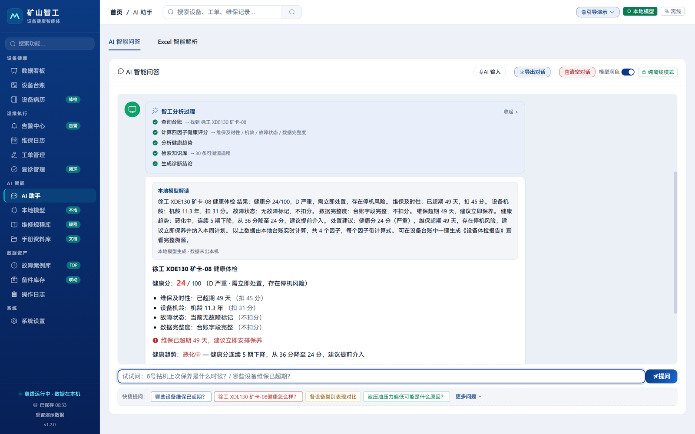
现场工程师不可能坐下来填表格。所以他直接在 AI 助手的对话框里说一句人话——就是 3.1 那个问问题的框，不是另开一个录入页。系统先按“要办的事”解析，解析不出写入动作，才退回去当问答。
| 对着 AI 助手说（现场口语） | 本机数据库里发生的事 |
|---|---|
| “1 号挖掘机今天液压油压力偏低” | 新建维修工单，自动定优先级、带故障描述 |
| “3 号挖掘机检修完成了” | 工单置为已完成 → 归档设备病历 + 生成 7 天后复诊任务 |
| “6 号钻机做完保养了，换了机油和机滤” | 写入维保记录 + 更新上次维保日期 + 落一版健康快照 |
| “5 号矿卡先停机，别排产” | 设备状态改为故障停机 |
| “记一条经验：水温高多半是节温器卡滞” | 写入知识库，下次检索能命中 |
| “哪些设备维保已超期？” | 只读，不写库——问句不会误触发写入 |
这 6 句是实测跑过的原话，意图识别分别落到新建工单 / 完成工单 / 记录维保 / 改设备状态 / 写知识库 / 只读查询，无一误判。
| 能力 | 说明 |
|---|---|
| 7 类意图 | 报故障 / 完成工单 / 记录维保 / 改设备状态 / 做复诊 / 新增知识 / 查询 |
| 设备指代 6 级匹配 | 全名 → 简称 → 编号 → 序号 → 型号 → 模糊，逐级降级 |
| 歧义必问 | 指代不唯一时列出候选，确认按钮置灰——在有歧义的情况下拒绝写入。这是安全边界，不是功能缺失 |
| 写库前预检 | 例如“完成工单”会先查该设备是否真有未完成工单，没有则拦截并说明原因 |
| 理解卡 | 写入前展示“将要发生什么”（新建工单 / 归档病历 / 生成复诊 / 扣减备件），确认后才执行 |
| 一键撤销 | 撤销栈跨刷新持久化（最多 20 步），带 CAS——写入后又被改过的记录拒绝自动回退，不做静默覆盖 |
把规则引擎已经核实的结论，交给本地模型改写成口语化中文。模型规格：
| 项 | 值 |
|---|---|
| 模型 | Qwen2.5-0.5B-Instruct |
| 量化 | Q4_K_M |
| 体积 | 468.6 MB（491,400,032 字节） |
| 推理后端 | node-llama-cpp，纯 CPU，无需 GPU |
| 上下文 / 生成参数 | contextSize 1024 ｜ maxTokens 128 ｜ temperature 0.2 ｜ topP 0.9 |
| 角色 | 仅叙述层润色，不参与任何数值计算 |
| 模型档位 | 内置 0.5B；1.5B 为可选下载档位，多源回退（HuggingFace / hf-mirror / ModelScope / GitHub Releases）并校验 SHA |
| 装机自检 | 加载 + 生成 + 校验数字不变量，结果落盘 userData/llm-verify.json |
模型输出后，要过两道闸门。两道判据分开写、都拦——它们管的是两件不同的事。
| 校验 | 判据 | 拦住什么 |
|---|---|---|
数字不变量verifyNumbersSubset() |
生成文本中的每一个数字，必须 ⊆ 原结论的数字集合 | 模型新造的数字——例如编出一个看起来很像的停机损失 |
形状verifyNarrationShape() |
这段文本必须真的在复述结论 | 数字全对但整段答非所问——实测会回反问句、复读提示词、把问题推回给用户 |
大模型的失败模式是“少说”，不是“说错”。
任何一环失败——模型未加载 / 生成失败 / 数字对不上 / 形状不对——都会回退到规则引擎的原始结论。回退时在界面上如实说明原因，绝不把可疑输出作为最终结果放给用户。
两道闸门都在生成结束时判定。因此逐字输出的过程中，模型的原始措辞会先显示出来，回退只替换最终结果；形状校验也只拦措辞可识别的跑题形态。这是本产品目前最需要继续加固的一层，不掩饰。
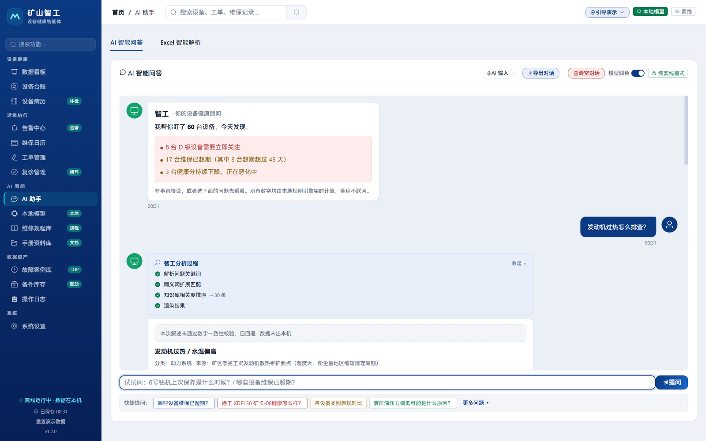
| 防护层 | 具体措施 |
|---|---|
| 零云端 | src 内无任何对外网络请求、无任何云端 API Key（唯一例外是开发模式加载本地 Vite 服务） |
| 零账号 | 不需要注册、不需要登录云端账号 |
| 数据不出机 | 数据落在本机单文件数据库，.mbak 一键整库导出，随时可搬走 |
| 模型不理解数据以外的事 | 模型的唯一输入是规则引擎已核实的结论文本，且上下文仅 1024 |
| 可关闭 | AI 助手头部有润色开关，关闭后直接展示规则引擎原文——慢机器上避免等待感 |
SYSTEM_PROMPT 定义在 src/main/llmEngine.js{prompt}| 模块 | 核心能力 |
|---|---|
| 数据看板 | 车队总览：设备数、健康分档分布、高风险清单、高频故障 TOP、停机损失估算 |
| 设备台账 | 全量设备增删改查、多条件筛选、虚拟滚动、照片、批量体检、导出 |
| 设备病历 | 单台设备完整体检报告与历史：健康曲线、四因子拆解、维修史、复诊记录、设备护照打印 |
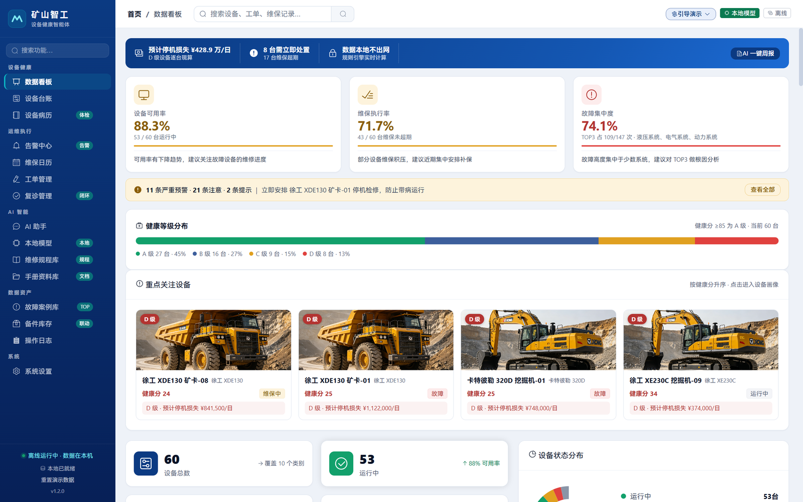
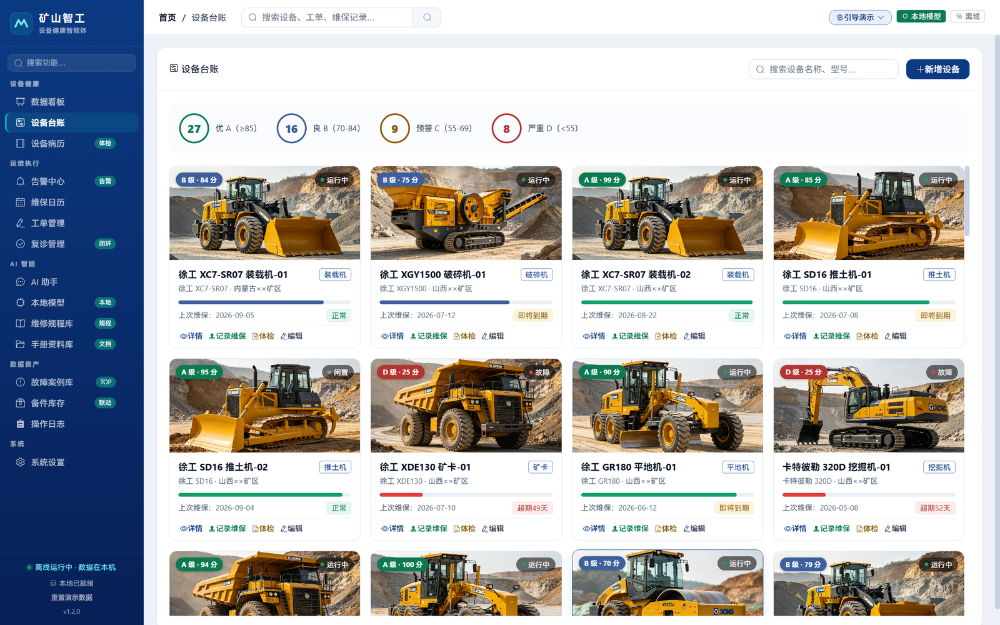
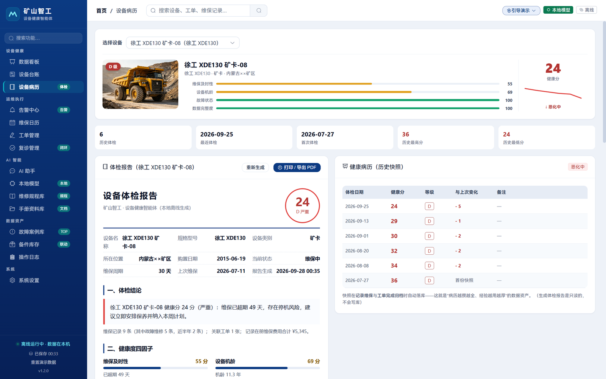
| 模块 | 核心能力 |
|---|---|
| 告警中心 | 自动扫描维保超期 / 故障状态 / 健康降级，按严重度排序；处置状态随库持久化，刷新不丢 |
| 维保日历 | 按日期视图排出保养排期与到期预警，可直接转工单 |
| 工单管理 | 工单全流程（待处理 / 处理中 / 已完成），支持口述建单；完成后自动归档病历 + 生成 7 天复诊 |
| 复诊管理 | 7 天后回访：确认修复效果，仍异常则再开工单，形成闭环 |
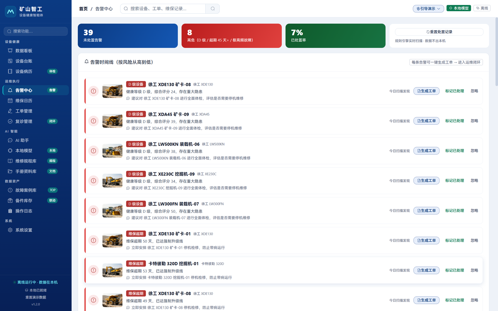
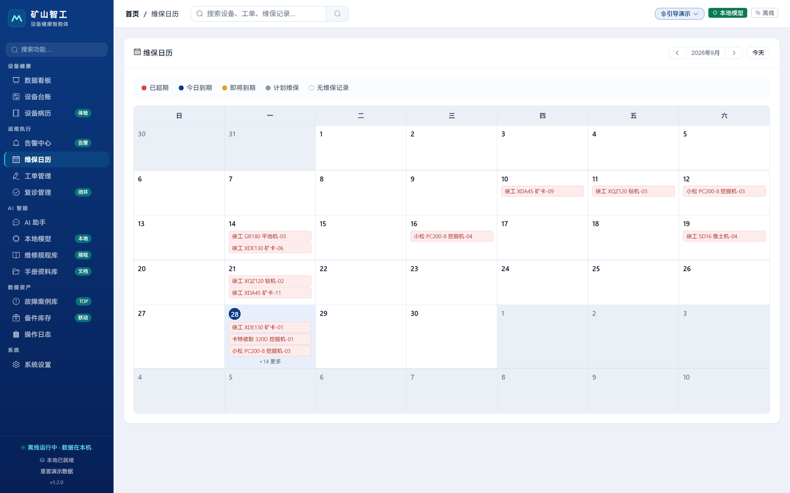
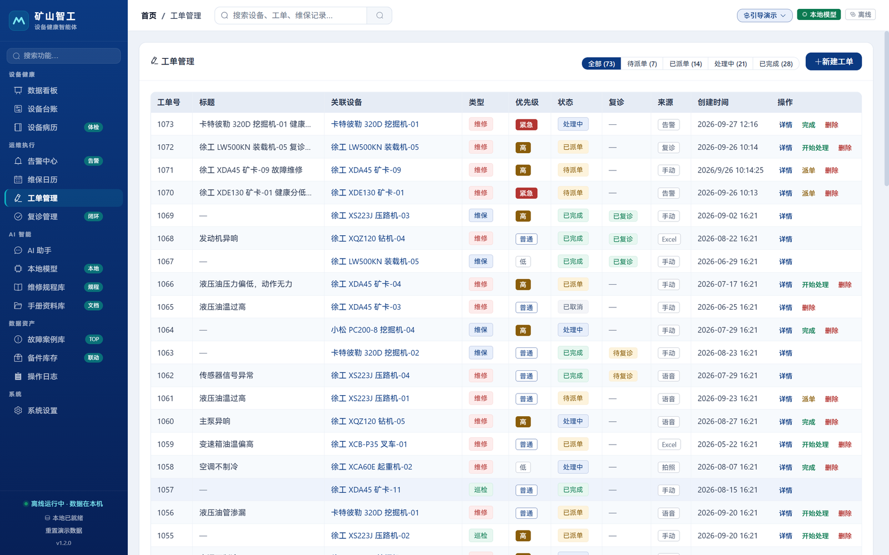
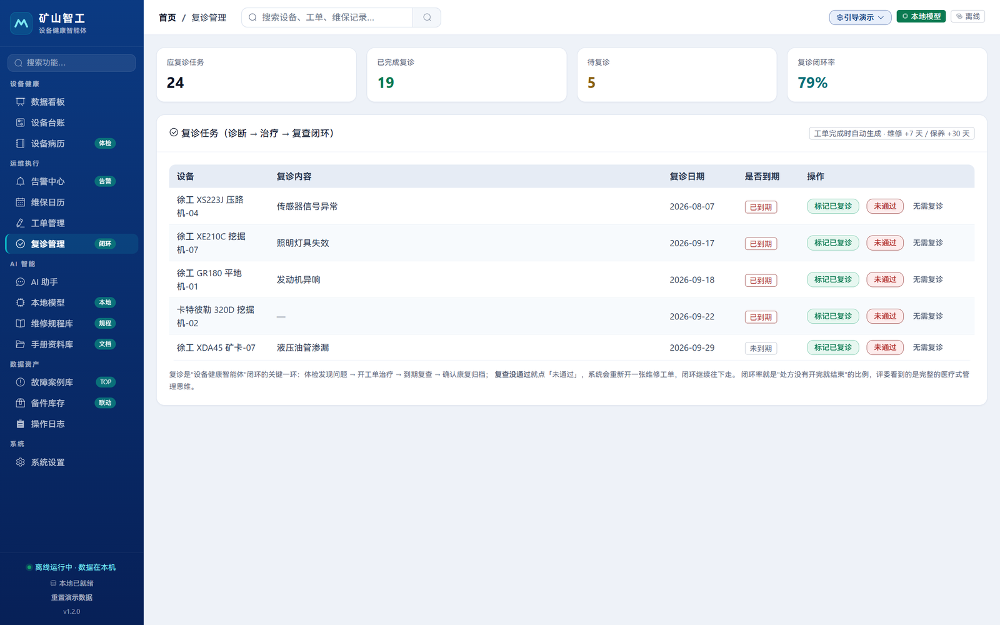
| 模块 | 核心能力 |
|---|---|
| AI 助手 | 统一入口，读与写同框：自然语言提问（查台账 / 规程 / 统计），口述录入（对话即改库——下工单、记维保、改设备状态、写知识库，确认后落库、可撤销）＋ Excel 导入 + 周报生成 + 会话导出 |
| 本地模型 | 模型档位管理、状态、装机自检结果 |
| 维修规程库 | 30 条规程 / 12 分类 / 34 组同义词，相关度打分检索；同设备同系统故障 ≥3 次自动提炼知识草稿 |
| 手册资料库 | PDF 本地解析，随包 3 份真手册开箱可看、可问答，回答带「第 N 页」出处 |
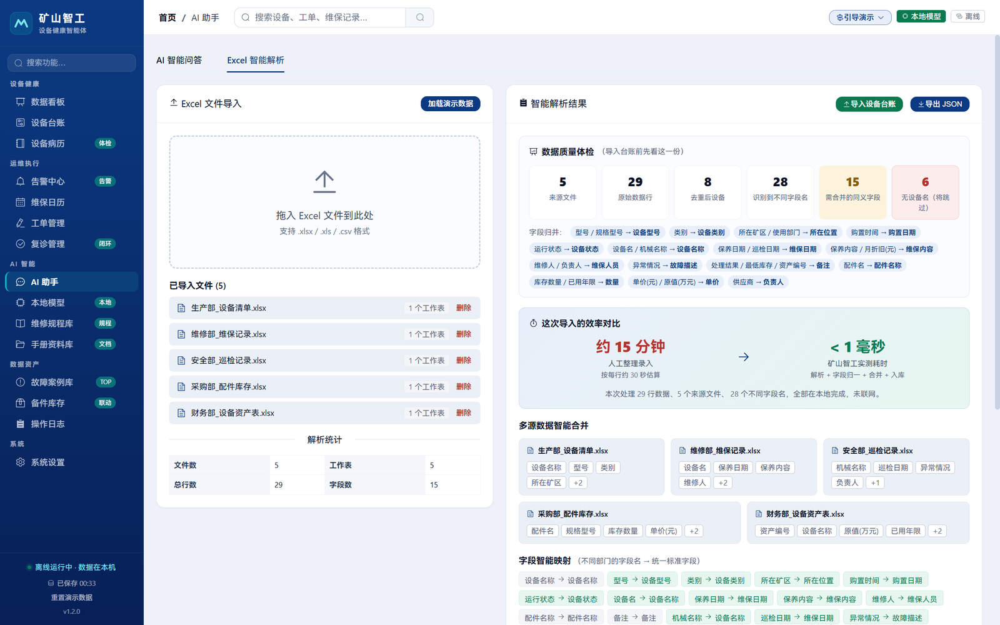
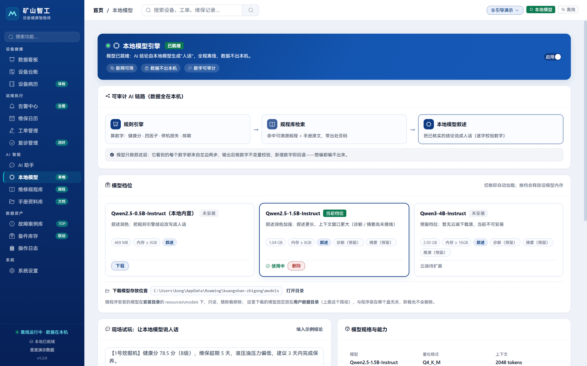
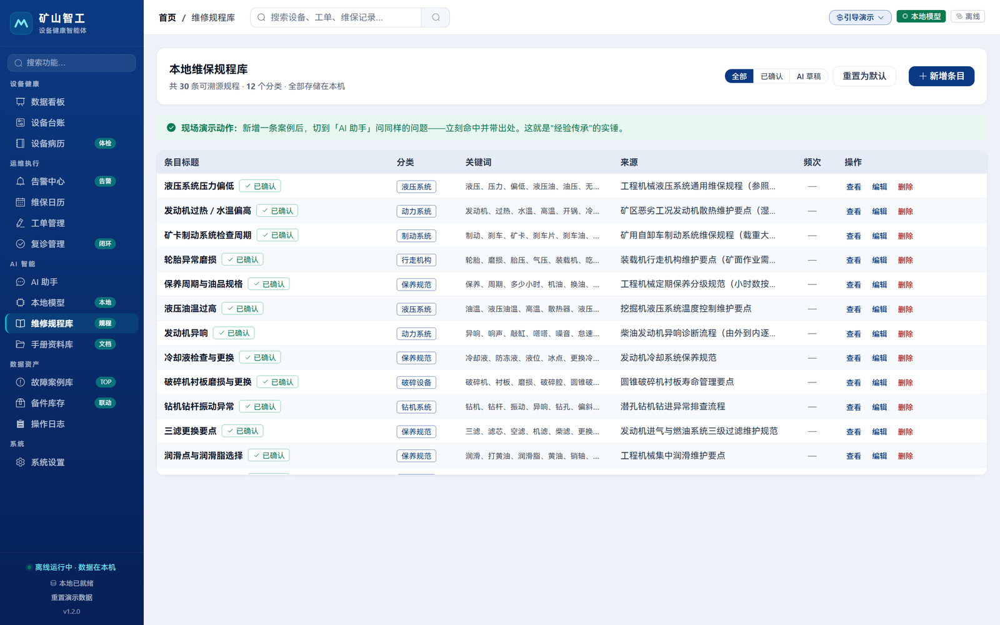
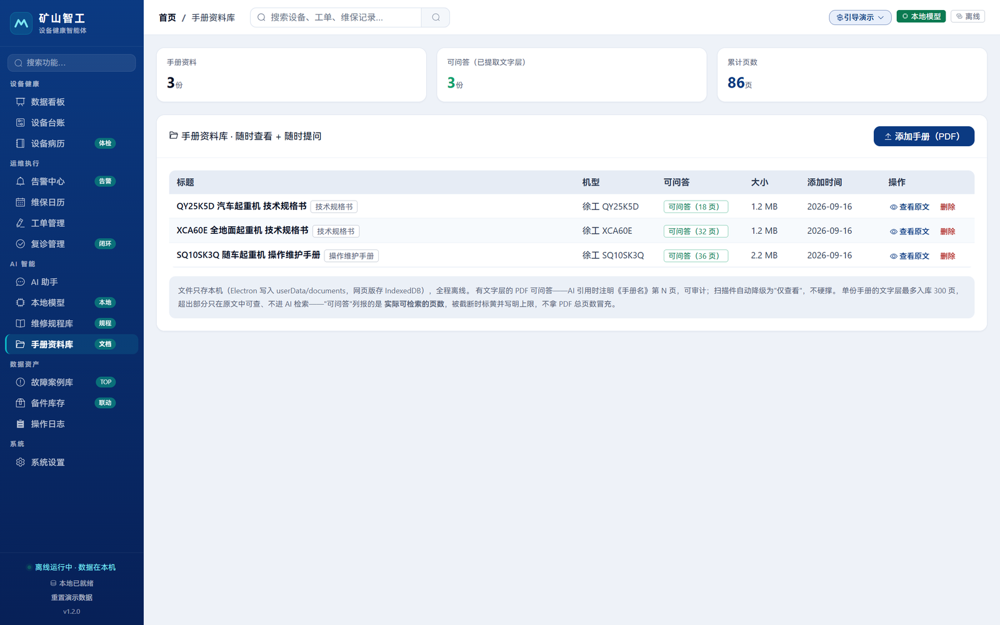
| 模块 | 核心能力 |
|---|---|
| 故障案例库 | 18 张案例卡，由已完成的维修工单派生，可逐张追溯到来源工单 |
| 备件库存 | 库存台账；维保记录里填的配件真的扣减库存并留流水 |
| 操作日志 | 全部写入留痕，每条标出操作人；滑动窗口保留最近 500 条 |
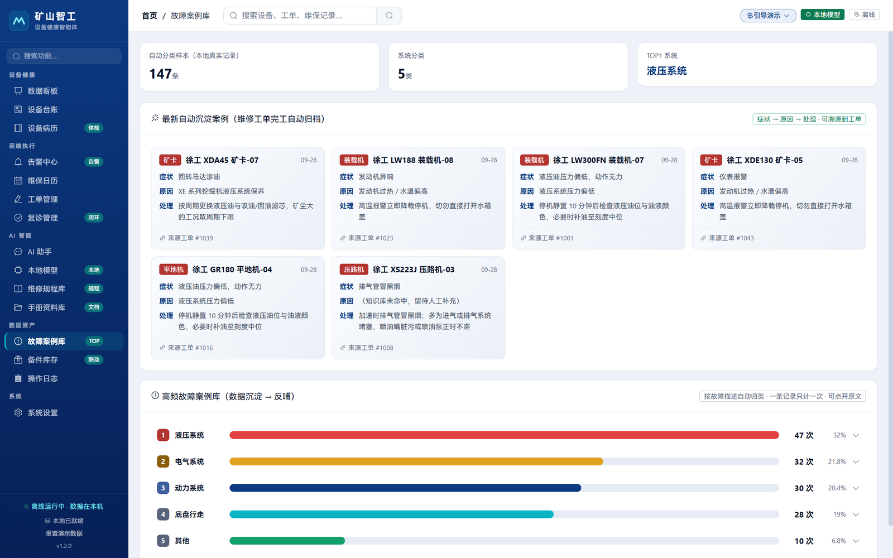
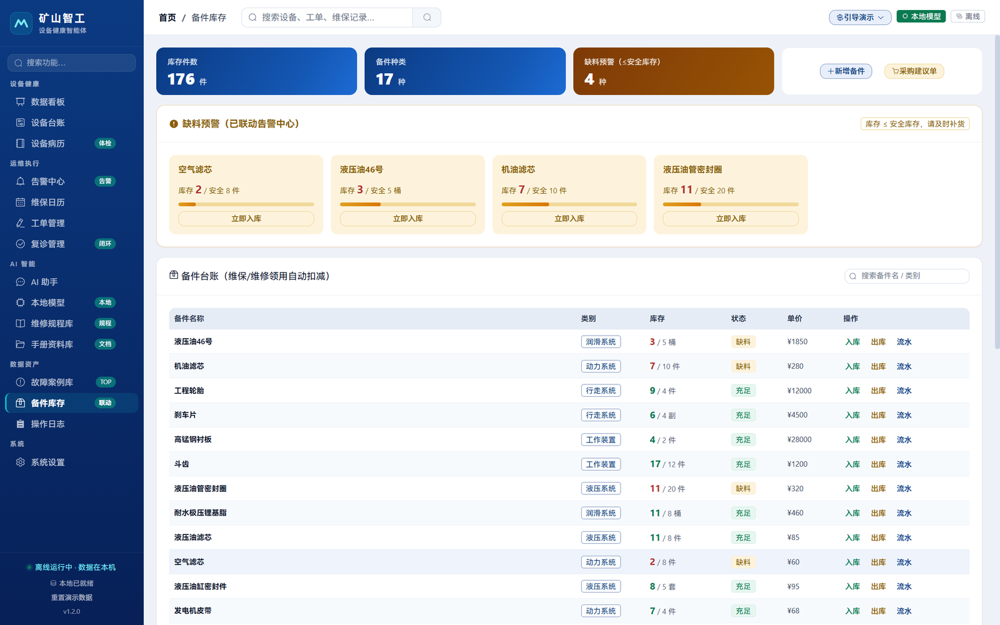
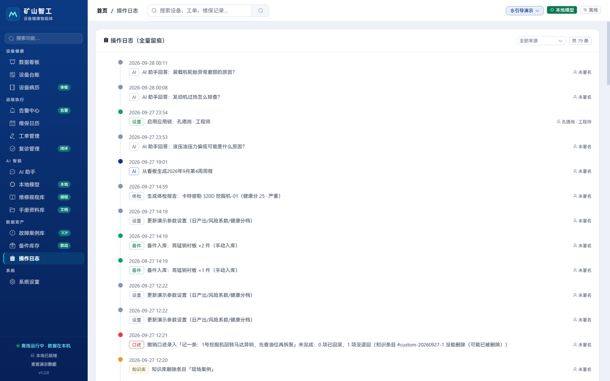
| 模块 | 核心能力 |
|---|---|
| 设置 | 应用锁与身份（多账户 / PIN / 空闲自动锁）、主题、数据重置、.mbak 备份导入导出 |
这一组只有 1 个页面，却是前面四组的前提——数据归谁、能不能搬走，都由这里决定。锁与身份的细节见 §4.9，备份与离线边界见 §4.10。
一次拖入多份表头写法不一致的 Excel，自动对齐合并入库。
为什么这样设计：现场的真实情况是生产部、采购部、维修部各发一份表，表头各写各的。要求客户先统一格式，等于要求客户先做一遍我们已经做的事。
很多系统的“闭环”停在把工单标成完成。本产品的闭环真的往下走：维保记录里填了配件，备件库存会真的扣减并留下流水。
健康分不是一颗黑盒分数，它由四个因子相加，每一步都能倒推。实现见 src/renderer/src/utils/health.js。
| 因子 | 规则 | 扣分上限 |
|---|---|---|
| 维保及时性 | 每超期 1 天扣 2 分；无维保记录扣 30 分 | ≤ 45 |
| 设备机龄 | 超过 5 年后，每多 1 年扣 5 分 | ≤ 45 |
| 故障状态 | 当前处于故障状态扣 30 分 | — |
| 数据完整度 | 购置日期 / 上次维保 / 设备型号 每缺一项扣 5 分 | — |
A ≥ 85 ｜ B 70–84 ｜ C 55–69 ｜ D < 55
| 条件 | 最低等级 |
|---|---|
| 维保超期 > 30 天 | 至少 C 级 |
| 维保超期 > 45 天 | 至少 D 级 |
| 处于故障状态 | 直接 D 级 |
距上次维保 140 天 − 周期 90 天 = 超期 50 天，每超期 1 天扣 2 分 → 扣 100 分，单因子上限 45 分，实际扣 45 分。
停机损失 = 风险系数 × 日产出 × 预估停时
日产出按机型取值：矿卡 12 万 / 天、破碎机 9 万 / 天、挖掘机 8 万 / 天。风险系数与场景参数可按矿种预设切换，修改后全量重算。
| 能力 | 说明 |
|---|---|
| 操作日志 | 全部写入留痕并落库，滑动窗口保留最近 500 条 |
| 身份留痕 | 启用应用锁后，每条日志标出操作人；侧边栏底部常显当前身份 |
| 应用锁 | 多账户（姓名 + 4–6 位数字 PIN），PIN 走 PBKDF2-SHA256 + 每账户随机盐，不存明文 |
| 空闲自动锁 | 默认闲置 10 分钟回锁屏（指针 / 按键 / 滚轮 / 触摸都算活动）；可关闭或改为 1/5/10/15/30 分钟，改完当次生效 |
| 未解锁不装载数据 | 锁屏状态下主应用根本没被创建，台账数字不会先闪一下 |
| 撤销栈 | 跨刷新持久化，带 CAS——写入后又被改过的记录拒绝自动回退 |
| 措施 | 实现 |
|---|---|
| 无网络依赖 | src 内无任何对外网络请求、无云端 API Key |
| 进程隔离 | contextIsolation: true + nodeIntegration: false + sandbox: true |
| 能力白名单 | preload 只经 contextBridge 暴露具名方法，不透传 ipcRenderer |
| IPC 来源校验 | 主进程校验调用来源，非可信来源直接拒绝 |
| 文档目录约束 | 文档读写限制在受控根目录内 |
| 外部链接 | 一律交由系统浏览器打开 |
| 数据可搬走 | .mbak 一键整库导出 / 导入（含对话历史） |
常见做法是在提示词里约束（“不要编造数字”）。本产品的做法是在出口处硬校验——生成文本里的每个数字必须原结论里有，否则整段丢弃。提示词约束是“请求模型别犯错”，出口校验是“无论模型做了什么，错的东西都出不去”。
模型没加载、生成失败、校验不过——任何一种情况下，系统都回退到规则引擎的原始结论，功能不降级。这意味着模型是增强项而非依赖项，可以随时关闭。
数据不出本机不是一条隐私政策，而是架构上做不到——src 内没有任何对外网络请求，没有云端 Key。给不给厂家，是客户导出时的选择。
每一项都能说清“为什么是它”。
| 组件 | 选型 | 理由 |
|---|---|---|
| 前端框架 | Vue 3 + Element Plus + Pinia | 组件完整，开发效率高 |
| 桌面框架 | Electron | 跨平台；渲染进程三重隔离 + preload 白名单 |
| 构建 | Vite | 快速热更新 |
| 数据库 | sql.js（纯 JS SQLite），12 张表 | 零部署、单文件；Electron 落盘 userData/*.db，浏览器环境走 IndexedDB |
| Excel 解析 | SheetJS | 前端直接解析，无需后端 |
| 本地推理 | node-llama-cpp + Qwen2.5-0.5B-Instruct Q4_K_M | 纯 CPU，装机即用 |
| PDF 解析 | pdfjs-dist | 手册本地解析，回答带页码出处 |
| 图表 / 动效 | ECharts（按需注册）、GSAP | 按需引入控制体积 |
| 引导 | driver.js | 12 步主线开箱可播 |
全部选型都服从同一条约束：不引入任何需要联网或需要服务端的组件——这是 §2.3 立场一的直接后果。
npm run verify 一条命令按序跑完 10 道验收，各网专责：
| 命令 | 管什么 |
|---|---|
lint | 静态检查（含 vue/no-undef-properties——本产品吃过大亏的规则） |
self-check | 本地核心逻辑：日期、数据库落盘往返、Excel 解析、知识库检索 |
main-check | 主进程契约：IPC 注册与来源校验、切档失败不得改变当前档位、拉不到远端清单时回退内置 |
store-check | 状态层：首启播种闸门、字段白名单回读、落盘失败必须仍是脏状态、重置后撤销栈清空 |
pack-check | 打包依赖闭包——运行期依赖有没有被排掉、原生库有没有解包。这类缺陷只在装完包才现形 |
coverage | 口述指代消解的能力覆盖矩阵（明确不是代码覆盖率） |
build | 生产构建 |
e2e | 无头浏览器走真实交互 |
e2e:nl | 口述录入链路：理解卡 → 歧义必问 → 确认 → 落库 → 刷新仍在 → 撤销 → 纯查询不误写 |
audit:contrast | 文字对比度达 WCAG AA（浅色令牌） |
断言条数以脚本末行「合计 N 项」为准。另有一条不在门禁链里的深色主题审计 npm run audit:contrast:dark（深色令牌下审同样 15 条路由）——改深色样式时必须单独跑。
右上角一键播放的 12 步主线（看板 → 台账 → 病历 → 工单 → AI 助手 → 规程库 → 复诊 → 本地模型），默认手动点一步走一步、可切自动，首启自动弹一次。这让评审不必先读手册就知道从哪里看起。
npm run bench:scale 在 Node 里真装配状态层，灌入 5000 台设备 + 5 万条维保记录，实测：
这三项属“看得见的”规模数据，不是门禁——耗时测量会随机器抖动，不该让验收链变红。
| 形态 | 说明 |
|---|---|
| 离线安装包 | 内含 468 MB 模型，安装包实测 628 MiB，双击安装即用，无需联网激活 |
| 在线轨安装包 | 不含模型，模型可后续下载 |
| 应用本体 | app.asar 实测 21.3 MiB——代码本身很小，体积大头是模型与原生推理后端 |
| 已配置目标 | Windows NSIS（x64）｜ macOS dmg ｜ Linux AppImage |
演示台账由程序确定性生成（固定种子 20260912）：
维保项目库与故障现象库来自公开手册（LW188 装载机维护手册的 6 级保养周期、XE210C 挖掘机操作维护手册的故障排查表，条目上注有手册页码）。
故障案例卡由“已完成的维修工单”派生——症状是工单原文，原因 / 处理取自知识库命中的条目，可逐张追溯到来源工单。
| 它不是 | 它是 |
|---|---|
| 云端 SaaS / 多租户平台 | 单机离线桌面应用，装机即用 |
| 企业级 EAM / CMMS（含权限分级、集中管控） | 面向现场工程师与班组的工作台 |
| 预测性维护系统 | 基于已录入数据的健康评估与预警 |
| 故障诊断系统 | “现象 → 规程条目”的检索匹配 |
| # | 限制 | 说明 |
|---|---|---|
| 1 | 无基于角色的权限分级 | 账户里的“角色”只是标识（界面显示 + 进操作日志），没有“维修工不能删设备”这类拦截 |
| 2 | 锁的是界面不是文件 | 数据库文件仍可被任何 SQLite 工具直接打开；锁配置在 localStorage，清掉即绕过。防的是旁人随手翻看与误操作，不是技术人员 |
| 3 | 日志身份不回填 | 启用应用锁之前写下的日志（含随包演示数据）操作人显示「未署名」 |
| 4 | 无语音识别 | 未实现 |
| 5 | 无真实 OCR | 拍照识别为演示用的模拟结果，未接入真实识别引擎 |
| 6 | 撤销覆盖范围有限 | 只有口述录入 / AI 助手的写入可撤销。工单完成、复诊、备件出入库、设备增改、Excel 导入、备份导入都没有撤销 |
| 7 | 部分失败不回滚到底 | 撤销逐条执行，失败项会明确报出原因，但已回退的部分不会自动复原 |
| 8 | 无测点实时数据接入 | IoT 未实现。数据来自导入与手工 / 口述录入 |
| 9 | 无多终端同步 | 企业版私有化部署属规划内容，未实现 |
| 10 | 模型资源占用未实测 | 仅有“纯 CPU、无需 GPU”的定性结论 |
| 11 | 无并发控制 | 单机单进程设计 |
| 12 | 触摸路径未测 | 定位为桌面工作台，移动端与触摸操作未验证 |
| 13 | “主动提示”尚以看板形式存在 | 设备预警目前以告警中心 + 数据看板呈现，尚未做到开机主动提示 |
| 14 | 规程检索不是诊断 | 知识库 30 条，覆盖有限，查不到会明说 |
| 15 | 档案可被修改 | 数据库文件未加密，因此维修档案不可作为法律意义上的不可篡改证据 |
| 16 | 视觉回归靠人工 | 未自动化 |
| 17 | 流式输出期间用户仍会先看到模型原话 | 两道闸门都在生成结束时判定，逐字打字的过程中模型的原始措辞会先显示出来；回退只会替换掉最终结果 |
| 18 | 形状校验覆盖有限 | 只拦措辞可识别的跑题形态（结尾反问 / 指代提示词 / 把问题推回用户 / 空壳）。输出中间夹反问但不含这些特征的，仍可能漏过 |
| 19 | 叙述层未经真实模型回归 | 自动化验收跑的是浏览器模式，该模式下模型不可用、直接走回退，因此 10 道门禁结构上测不到模型的真实输出，这一层目前靠打包版手工复测 |
| 阶段 | 方向 |
|---|---|
| 近期 | 补齐语音录入与真实 OCR；测点数据接入（标准协议适配） |
| 中期 | 多终端同步与企业版；模型档位可配置（0.5B / 3B / 7B） |
| 远期 | 行业扩展（港口机械、隧道装备）；备件供应链对接 |
矿山的经验，一直存在一个人的脑子里。
它能解决几乎所有问题，唯独解决不了两件事：他会退休，而且他只有一个。
矿山智工不是“把云端方案搬到本地”，也不是“给传统软件加一个 AI 按钮”。它从三条约束出发——数据不能出矿、现场没有网、算力不能要求——倒推出一个完整的架构，并在这个架构里回答了一个更根本的问题：
当 AI 开始参与生产决策，它说的话由谁负责？
于是这个 AI 的失败方式是“少说”，而不是“说错”。
一台笔记本、不联网、不需要 GPU——完成从台账导入 → 健康分 → 告警 → 工单 → 复诊闭环 → 备件扣减 → 经验沉淀的全流程，且每一个数字都能追溯到它的来源。
| 内容 | 位置 |
|---|---|
| 本说明书（唯一交付件，.docx / .pdf 均由它生成） | docs/产品说明.html |
| 参赛材料（作品信息 / 竞品 / 规划） | docs/参赛材料.md |
| 5 分钟演示脚本（含故障预案） | docs/演示脚本.md |
| 验收结论与缺陷记录 | docs/测试报告.md |
| 视觉规范 | docs/视觉规范.md |
| 项目总览 | README.md |
| 健康分实现 | src/renderer/src/utils/health.js |
| 口述录入实现 | src/renderer/src/utils/nlCommand.js |
| 出口校验实现 | src/renderer/src/utils/llmClient.js |
| 本地推理引擎 | src/main/llmEngine.js |